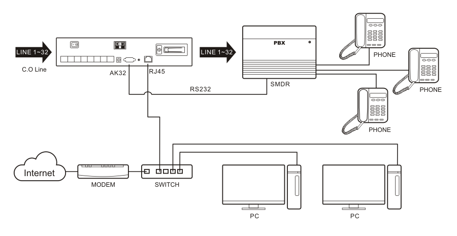
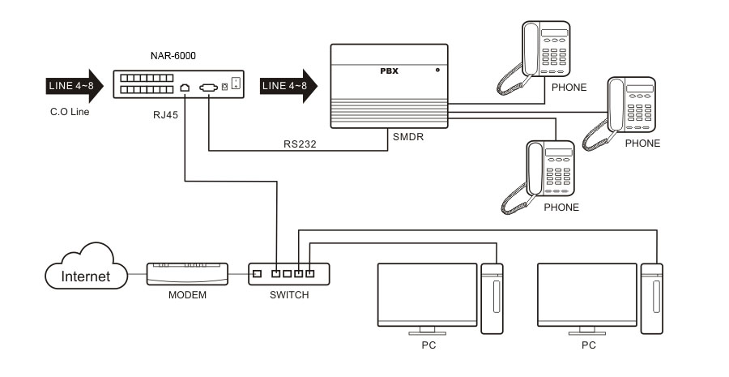
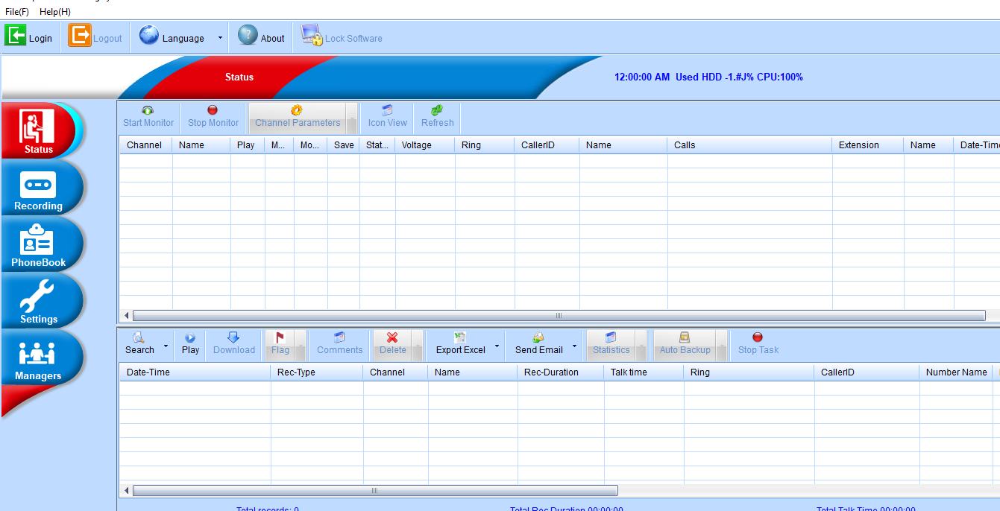
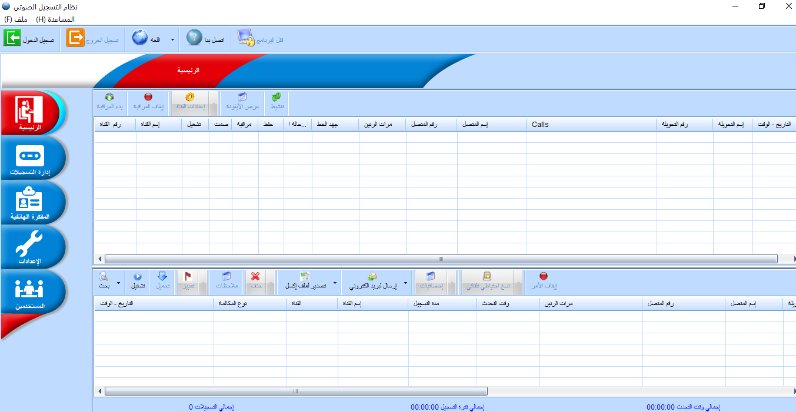
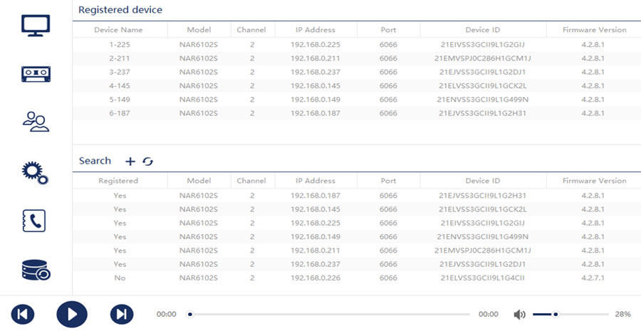
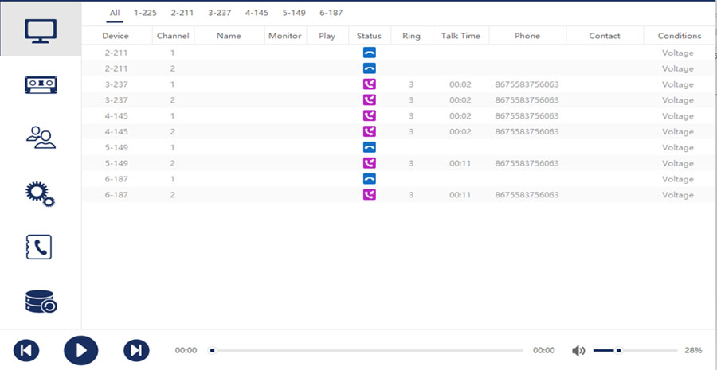
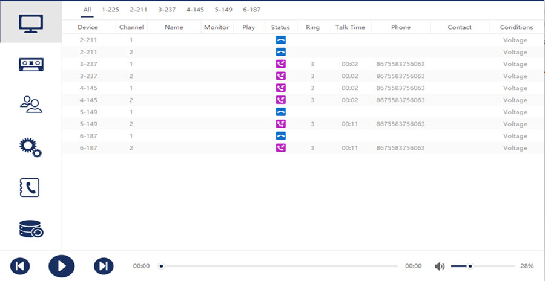

connection
 product description
Phone System Features
The Line Logger Call Recorder is a compact, standalone call recording solution for those wanting full-time recording on up to 8 lines without the need for a host PC. It’s the perfect solution for a single location business, home office user or for multi-location businesses wanting to record branch locations, yet store and manage calls centrally.
The Call Recorder is available in 2, 4 or 8 line configurations. The device ships with an 8 GB SD card that allows up to 560 hours of storage on the device, longer term storage is enabled by setting a network drive location for automatic back-up using the Call Recorder Management Software. Using this option extends your storage to meet virtually any requirement (1TB drive will store 70,000 Hours).
key features
- live call monitor
- Caller ID, search by Caller ID or Number Dialed
- SMDR Integration, allows for search by extension
- Optional Auto-Announcement Greeting
- Start/Stop Recording Using DTMF Controls
- Manager Alert of Calls In or Out to Specific Numbers
- Track unanswered calls, ring times and line status
- Power Status & device tampering reporting
call managment software
   

Line Logger Call Management Software allows you to interface to the Call Recorder via your Local Area Network and review the calls stored on the Call Recorder. Calls can be played directly from the Management Software or transferred to your PC for storage.